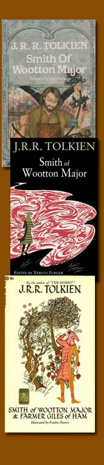

|
© 2021 Festival Art and Books. All rights reserved.
The Tolkien Professor
Smith of Wootton Major
Corey Olsen
Smith of Wootton Major is first and foremost a fairy tale. Indeed it is more than just an example of a fairy tale; it is Tolkien’s most deliberate exploration in fiction of the nature and function of fairy tales.
Faërie Tales
Throughout his career, Tolkien was a proponent of fairy tales, which he thought modern readers seriously undervalued and largely misunderstood. His ideas about fairy tales are most fully articulated in his enormously important essay “On Fairy-Stories.” When he discusses the nature of fairy tales, he begins with a crucial distinction: “fairy-stories are not in normal English usage stories about fairies or elves” (which two words Tolkien uses almost synonymously); rather, fairy tales are “stories about Fairy, that is Faërie, the realm or state in which fairies have their being” (Tolkien Reader 38). Although elves may appear in fairy stories, they are rarely the main focus, Tolkien insists. “Most good ‘fairy-stories,’” he explains, “are about the adventures of men in the Perilous Realm or upon its shadowy marches” (38).
For both the protagonist and the reader alike, therefore, a fairy tale is primarily an encounter with the mysterious realm of Faërie. The nature of that realm, however, cannot be easily conveyed. “Faërie cannot be caught in a net of words,” Tolkien observes, “for it is one of its qualities to be indescribable, though not imperceptible” (39). Tolkien still makes an effort to put words to this perception, calling it “wide and deep and high and filled with many things: all manner of beasts and birds are found there; shoreless seas and stars uncounted; beauty that is an enchantment, and an ever-present peril; both joy and sorrow as sharp as swords” (33). Although a human, whether character, writer, or reader, may “count himself fortunate to have wandered” there, we do not really belong. In attempting to describe the indescribable, Tolkien adopts a tone of humility, saying of his own experience as a reader: “I have been hardly more than a wandering explorer (or trespasser) in the land, full of wonder but not of information” (33).
Smith of Wootton Major began as an anecdote designed to illustrate the nature of Faërie. Tolkien had been asked to write an introduction to George MacDonald’s story The Golden Key, in the course of which Tolkien was trying to explain the nature of fairy tales and thus of Faërie. In an attempt to illustrate the relationship between humans and Faërie, he described a Great Cake containing a fay star which granted its finder the privilege of entering into Faërie. The introduction to The Golden Key was never finished, but the illustration grew and took on a life of its own.
 |
Smith in the Perilous Realm
Smith of Wootton Major tells the story of a boy who swallows a silver star from Faery (as Tolkien spells the word throughout this story) that was hidden in a slice of the Great Cake served at a festival. On his tenth birthday, Smith stands listening to the “dawn-song of the birds,” hearing it rushing towards him “like a wave of music” (21). The music of nature reminds young Smith, somehow, of Faery, and he joins the song, singing “high and clear, in strange words that he seemed to know by heart” (22). This first participation in the music of Faery opens a door to Smith, for at that moment the fay star falls from his mouth and he claps it to his brow, where it remains, granting him access to the land of Faery.
Smith becomes a regular traveler in Faery, and through his travels, Tolkien provides us with glimpses of the Perilous Realm. These glimpses are as full of mystery as they are of wonder. Smith comes to the shores of the eerily and even puzzlingly named Sea of Windless Storm, where he meets elven mariners “tall and terrible; their swords shone and their spears glinted and a piercing light was in their eyes” (28). They are returning “from battles on the Dark Marches of which men know nothing,” we are told, but Smith learns no more, for upon seeing the fairy warriors marching towards him, “his heart was shaken with fear, and he fell upon his face” (28). Less terrifying but equally awe-inspiring is Smith’s sight of the King’s Tree, which he sees “springing up, tower upon tower, into the sky, and its light was like the sun at noon; and it bore at once leaves and flowers and fruits uncounted, and not one was the same as any other that grew on the Tree” (28). Both of these encounters suggest that Smith’s experience of Faery (and therefore ours, as readers) amounts only to the sight of a tiny patch of a great tapestry or the hearing of a line or two of a mighty epic.
As the story proceeds, however, we begin to notice that Smith’s attitude towards Faery and his own presence there is a bit suspect. Even though he recognizes “that the marvels of Faery cannot be approached without danger,” he nevertheless becomes more than a mere wanderer or visitor in the land (24). He becomes an explorer, “desiring to come to the heart of the kingdom” (28). After much persistent effort, he finds a road through the Outer Mountains and a difficult but scalable pass through the Inner Mountains, until “upon a day of days greatly daring” he looks over another quite evocatively named vista: the Vale of Evermorn (31). The green of this vale, Tolkien says, “surpasses the green of the meads of Outer Faery as they surpass ours in our springtime” (31). This land into which he has by great exertion and perseverance intruded seems to be some kind of Holy of Holies, the most secret and marvelous region of Faery.
The presumption of Smith’s journey is finally confronted by a young maiden who emerges from an enchanting circle of dancers. Laughingly, she rebukes him: “You are becoming bold, Starbrow, are you not? Have you no fear what the Queen might say, if she knew of this? Unless you have her leave” (33). The rebuke is gentle, but it draws Smith’s attention away from his own desires and towards the authorities whose realm he has violated without permission. Immediately, “he was abashed, for he became aware of his own thought and knew that she read it: that the star on his forehead was a passport to go wherever he wished; and now he knew it was not” (33). Smith realizes that he has misunderstood and even abused the gift of the star. The land of Faery was opened to him, and he has wondered at it and loved it, but his love was still in part a greedy love, focused on his own pleasure and indulging a continued desire to see more and learn more of Faery’s secrets. Smith finally remembers that the glimpses he has been granted of Faery have been given to him not because of his merit, but by grace.
The graciousness of his reception into Faery is here compounded by the gentle response to his boldness and transgression. When he is stricken by guilt and self-consciousness, the maiden doesn’t chastise him further; she only smiles on him and invites him to dance with them, later giving him a white flower that never dies, one of the few tangible relics of Faery that Smith and his family will keep and cherish for generations. In the moment that he recognizes his fault, Smith is shown further grace.
The Humility of Faery
On another trip, years later, Smith returns to Inner Faery, but this time he is summoned: guarded and guided and even blindfolded by mist and shadow at times. Finally, he is brought before the Queen of Faery herself. The power and the presence of the Elf Queen are almost overwhelming: “She stood there in her majesty and her glory, and all about her was a great host shimmering and glittering like the stars above; but she was taller than the points of their great spears, and upon her head there burned a white flame” (36-37). In her presence, Smith does not even bow or kneel, “for he was dismayed and felt that for one so lowly all gestures were in vain” (37). After all his visits to Faery, Smith is now finally confronted by the full and incalculable power and authority of the Perilous Realm, and he has been summoned to appear before its Queen.
At this moment, Smith realizes that the laughing and dancing maiden who rebuked him so gently and befriended him so graciously was indeed the Queen herself, and this realization, coupled with the beauty and awe of her revealed presence, brings on a deep shame. Smith remembers not only his own transgressions and presumptions of the past, but he thinks also at this moment of the ignorance and churlishness of his townsmen, and he remembers old Nokes, the incompetent Master Cook, ordering a paper Fairy Queen made with a tinsel wand and cautioning the children that the Elf Queen was “a tricky little creature” (20). Smith is sensitive not only to his own unworthiness, but to ignorance and arrogance of humanity as a whole, “and in shame he lowered his eyes from the Queen’s beauty” (37).
But the Queen of Faery is not concerned for her status or reputation. The Queen sets aside the claims to reverence and apology to which she is richly entitled. She does not stand on her dignity or seek redress for her wounded honor, but she responds with humility and shows that she sees things very differently than a human in her position might. “Do not be grieved for me, Starbrow,” she says, “Nor too much ashamed of your own folk. Better a little doll, maybe, than no memory of Faery at all. For some the only glimpse. For some the awaking” (37). And with great forgiveness and generosity, she silently sets aside all transgressions and emphasizes only that since the sight of the Fairy cake and the swallowing of the star, “you have desired in your heart to see me, and I have granted your wish” (38). Smith’s heart has been drawn to Faery, and although that desire might have been mingled with presumption, the Queen takes no thought for her own position and seeks only to bestow blessings among mortals, even among the unworthy. This is the humility of Faery.
Passing on the Star
Smith has received a lesson in humility, and it turns out that he must swiftly apply that lesson. After his meeting with the Queen, Smith finds that he must give up the star, and with it his wanderings in Faery. When Alf, the Master Cook who is later revealed to be the King of Faery himself, asks him if he thinks it is time to give up the star, he responds at first with all the possessiveness of entitlement and presumption: “Isn’t it mine? It came to me” (41). His second thought is more moderate and recognizes that he has no real claim of ownership over the star, but he still seeks a justification for clinging to it: “May a man not keep things that come to him so, at the least as a remembrance?” (41). Alf tells him that some things “cannot belong to a man for ever, nor be treasured as heirlooms. They are lent” (41). This is a complex response. On the one hand, he reminds Smith of how presumptuous it would be for him to claim the fay-star, which is of Faery and certainly not a thing to be claimed by a man. At the same time, he reminds Smith, gently, that he has been blessed by the lending of the star, and moreover that he already has an heirloom to be treasured: the imperishable white flower, given him by the Queen herself.
But Smith must not only forget himself; he must also learn to consider the blessing of others, even when they come at his expense. Alf challenges him, stating: “You have not thought, perhaps, that someone else may need this thing” (41). Smith immediately “remembers with gratitude all that the star had brought to him,” but now these thoughts tend not to greed, but to generosity (41). He still longs to return to Faery even if only one more time, as we can see in his offer to bring it to the King of Faery himself, but he is no longer clinging to his own perceived rights. Smith finally shows the humility of Faery, himself.
Smith’s internalization of the Faery viewpoint is accentuated by his choice of his successor: a boy from the family of Old Mr. Nokes, who remains skeptical and disrespectful of Faery (and rude to his fellow townsmen) throughout his life. Watching little Tim, once he has swallowed the star, get up and begin “to dance all alone with an odd grace that he had never shown before,” Smith expresses satisfaction and contentment (57). “All is well then,” he thinks, “So you are my heir. I wonder what strange places the star will lead you to” (58). Like the Queen herself, Smith is glad in the end to see the desire for Faery born in others, even if at his own expense.
In Smith of Wootton Major, Tolkien does more than give some illustrations of what the realm of Faery, or Faërie, is like. He points to the very spirit of the Perilous Realm, and in Smith he dramatizes the failings and desires that inform and complicate the human relationship with it. But just as Smith comes to reflect the humility and the grace of Faery in his giving away of the star, so too can we see a similar attitude reflected in Tolkien’s own attitude towards Faërie in his descriptions of it in “On Fairy-Stories” and in his writing of Smith of Wootton Major itself. In this story, Tolkien suggests that all who are given the grace to visit Faërie, either as a traveler, a reader, or a writer, must learn the humility of Elfland, and when they do, they may find that what may feel like bereavement for one might be an awaking for others.
Visit his website at www.tolkienprofessor.com.